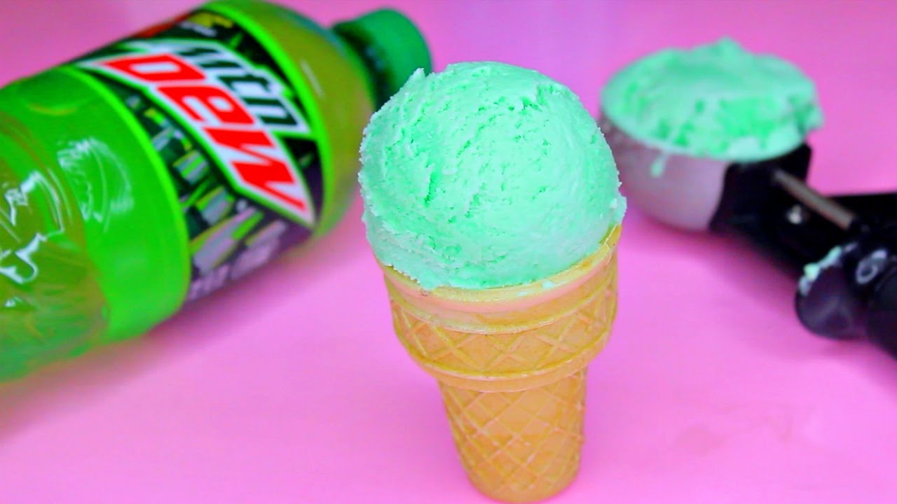

Mountain Dew Ice Cream
Homemade!!!
By: Skylar Ladden

Who doesn't like Mountain Dew?
If you like Mountain Dew, than this is the sight for you...
why crack open a cold one with the boys;
when you can enjoy it in a much creamer and smoother way.
Ingredients
- 2 cups heavy cream
- 1-14oz can sweetened condensed milk
- 1 tea spoon of vanilla extract
- 1 tea spoon of honey
- 12 oz Mtn Dew can (boil first to concentate syrup)
- (optional) green food coloring
Intructions
Add all ingrediants into a small bowl